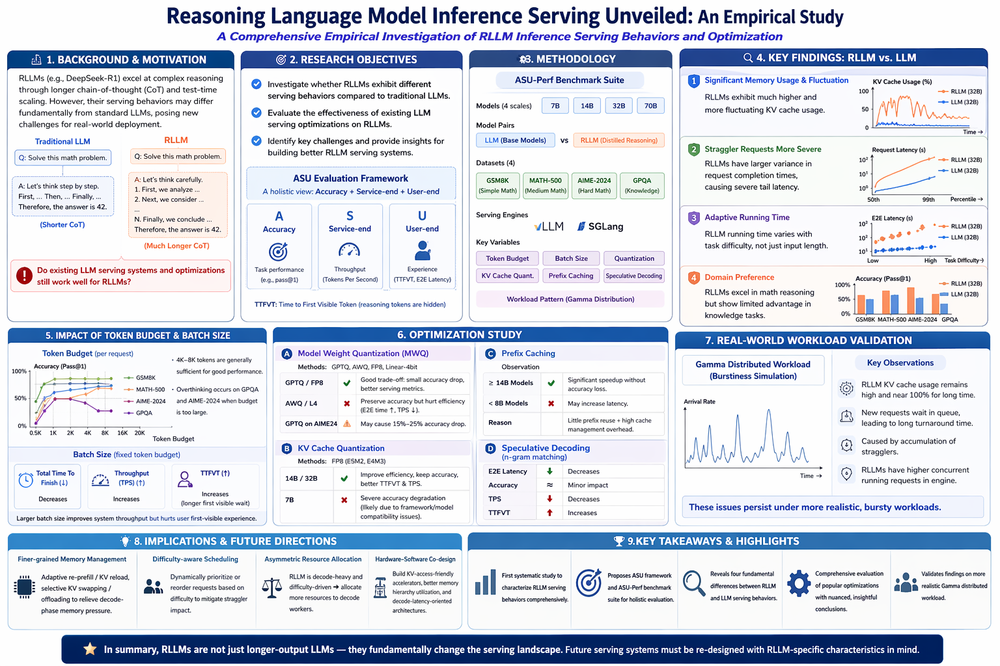
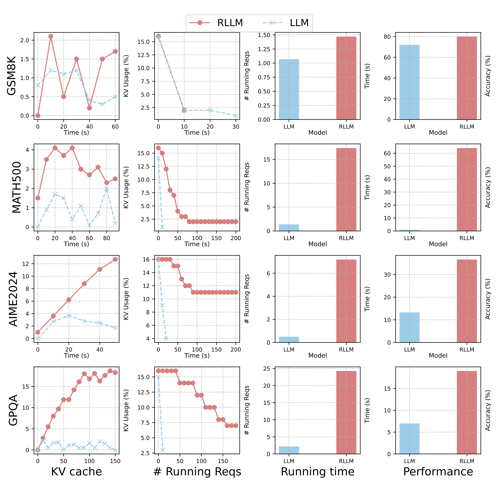
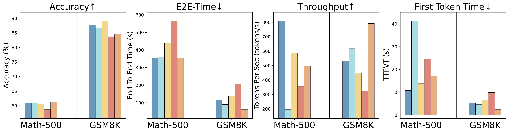
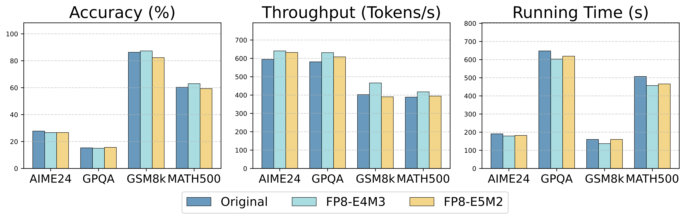
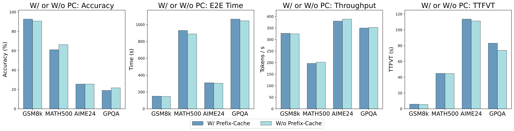
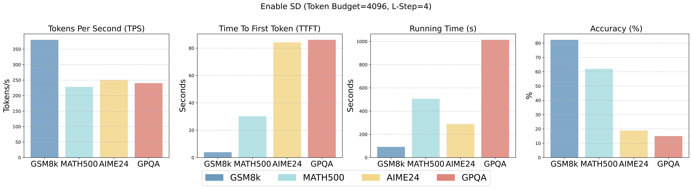
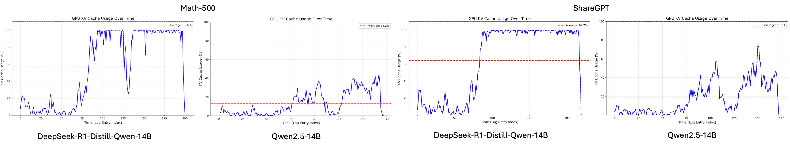
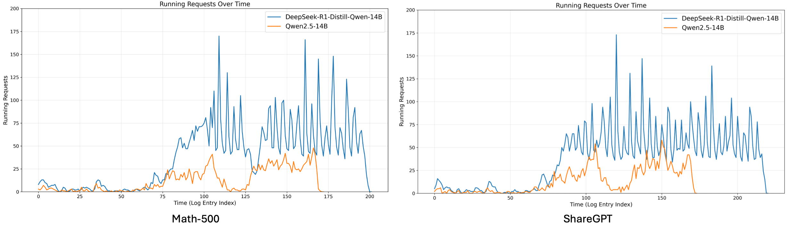

The reasoning large language model (RLLM) has been proven competitive in solving complex reasoning tasks such as mathematics, coding, compared to general LLM. However, the serving performance and behavior of RLLM remains unexplored, which may undermine the deployment and utilization of RLLM in real-world scenario. To close this gap, in this paper, we conduct a comprehensive study of RLLM service. We first perform a pilot study on comparing the serving performance between RLLM and traditional LLM and reveal that there are several distinct differences regarding serving behavior: (1) significant memory usage and fluctuations; (2) straggler requests; (3) adaptive running time; (4) domain preference. Then we further investigate whether existing inference optimization techniques are valid for RLLM. Our main takeaways are that model quantization methods and speculative decoding can improve service system efficiency with a small compromise to RLLM accuracy, while prefix caching, KV cache quantization may even degrade accuracy or serving performance for small RLLM. Lastly, we conductevaluation under real world workload modeled by Gamma distribution to verify our findings. Empirical results for real world workload evaluation across different dataset are aligned with our main findings regarding RLLM serving. We hope our work can provide the research community and industry with insights to advance RLLM inference serving.

Figure 0: Overview of this paper.
Large language models (LLM) such as GPT4 (Achiam et al., 2023), Claude4 (Anthropic, 2024; 2025), Gemini (Team et al., 2023), Llama (Grattafiori et al., 2024) have emerged as powerful knowledge bases via pre-training. These models, trained on vast Internet-crawled corpora such as C4 (Raffel et al., 2020), PILE (Gao et al., 2020), and guided by scaling law (Kaplan et al., 2020; Rae et al., 2021), have accumulated large-scale knowledge and exhibited remarkable performance on various knowledge-intensive tasks. Despite these advancements, LLMs are criticized for their unsatisfactory capabilities on complex reasoning tasks, e.g., challenging mathematics and programming tasks.
Recently, reasoning large language models (RLLM) like OpenAI o1 (Jaech et al., 2024), DeepSeek R1 (Guo et al., 2025), Qwen-3 (team, 2025) have sparked a growing body of research into test time scaling (Snell et al., 2025; Muennighoff et al., 2025) via long chain-of-thought reasoning (Wei et al., 2022), significantly improving their mathematical reasoning, coding tasks and knowledge reasoning capabilities, e.g., even a 1.5B open source RLLM can surpass giant cutting-edge LLMs like GPT-4o on math tasks (Guo et al., 2025). Such achievements make it possible to deploy a small to medium RLLM as a powerful assistant to light the burden of workload for the staff of small entities or even for person, democratizing the use of cutting-edge RLLMs. Hence, it is desirable for small entity with limited GPU resources to efficiently deploy RLLM with an inference engine privately for internal use.
RLLM and LLM. LLMs have demonstrated remarkable capabilities across various natural language processing tasks. However, standard LLMs often encounter difficulties when faced with complex problems that require multi-step reasoning, planning, and deeper cognitive processes, sometimes referred as “System-2 tasks” (Li et al., 2025d). To address these limitations, RLLMs have emerged, specifically engineered to enhance these deliberative reasoning abilities. A key technique employed by RLLMs is the “long Chain of Thought” (long CoT) prompting strategy (Shao et al., 2024). This approach encourages the model to generate extended, explicit step-by-step reasoning pathways, breaking down complex problems into more manageable parts. Unlike standard LLMs that might provide more direct or less detailed answers, RLLMs utilizing long CoT can better navigate the intricacies of tasks, leading to more accurate and justifiable solutions by methodically thinking through the problem.
Is there any distinct difference in serving behaviors between LLM and RLLM?
Nevertheless, current LLM serving engines, e.g., vLLM (Kwon et al., 2023), LMDeploy (Contributors, 2023), TensorRT-LLM (NVIDIA, 2023), are initially designed for traditional LLM, other than for RLLM. Though optimization techniques for LLM serving (§2) have been extensively studied, it remains largely unexplored whether RLLM exhibits distinct serving characteristics from LLM. If so, directly applying existing LLM serving techniques to RLLM may leave sub-optimal serving performance.
To answer the above question, we perform systematic studies of RLLM serving. We first establish the ASU assessment framework (§3.2) for assessing RLLM serving. To justify whether there exists a distinct difference in serving behavior between RLLM and LLM, we design a benchmark suite named ASU-Perf and conduct a pilot investigation with it on different-scale LLM and RLLM (§4).
The adoption of RLLM hinges on whether their are capable of generating value that outweighs their inference costs (Erol et al., 2025). Assessing this tradeoff requires metrics that account for both performance and serving costs for both service provider and users. For RLLM service providers and users, the performance metrics they care about differ: providers seek to maximize system throughput, while users expect rapid model responses. In addition, it is essential to ensure response accuracy while optimizing RLLM serving system performance as much as possible. Thus, we propose ASU (Accuracy, Service-end, User-end), a trinity framework for assessing RLLM serving performance by together considering response accuracy, RLLM service provider end and user end.
For accuracy metric, we employ evaluation own metric for each dataset.
For service provider side metrics, we use throughput metric TPS (token per second).
For user-side metrics, we use TTFVT (time to first visible token), a variant of TTFT, since we assume reasoning tokens of RLLM are invisible to users like commercial RLLM like OpenAI o1, and E2E requests running time as metrics.
We employ 4 different scale models to assess their serving performance and serving behavior. General LLM: Qwen-2.5-Math 7B, Qwen-2.5-14B, Qwen-2.5-32B, and meta-llama/Llama-3.3-70B-Instruct and their long-cot tuned counterparts RLLM: DeepSeek-R1-Distill-Qwen-7B, DeepSeek-R1-Distill-Qwen-14B, DeepSeek-R1-Distill-Qwen-32B, and DeepSeek-R1-Distill-Llama-70B for fair comparison.
We adopt three different difficulty level math reasoning datasets: GSM8K as easy level, MATH-500 as medium level, AIME-2024 as the hardest level. We also use GPQA for knowledge reasoning.
We employ 2 most adopted open source LLM inference engines, vLLM and SGLang (Zheng et al., 2024) in evaluation. We use OpenAI compatible API of these engines.
We employ ASU-Perf, an benchmark suite proposed by us for evaluating LLM and RLLM serving performance with different inference engine. We leverage it in all of evaluation.

Figure 2: The serving performance and behavior comparison of a batch requests between 7B RLLM and LLM. We can read from this figure that (1) RLLM exhibits significant KV Cache fluctuations than LLM; (2) long tail distribution of requests running time caused by straggler requests; (3) adaptive running time of RLLM; (4) domain preference on math.
To investigate RLLM serving behaviors, we analyzed the running logs of the inference serving engine and conducted a visualization of the running traces, as shown in Figure 2. As illustrated, RLLMs achieve much higher accuracy on math datasets than same scale LLM, but a on-par performance on knowledge reasoning such as GPQA.
Main Findings for RLLM Serving Characteristics. Given the above results in pilot studies, we have the following findings in comparison of RLLM and LLM serving behaviors:

Figure 3: Empirical results of current LLM quantization methods on 7B RLLM. current methods maintain or improve all serving-related metrics with less memory footprint while keep accuracy.

Figure 4: Empirical results for KV cache quantization on 14B model across different datasets.

Figure 5: Empirical results of comparison for enabling or disabling prefix caching on 32B RLLM.

Figure 6: Empirical Results of comparison for enabling or disabling SD on 7B RLLM.
We conduct extensive evaluations with various optimization techniques across diverse benchmarks. We find that the model quantization and speculative decoding integrated in the serving engine can improve serving efficiency and performance with only a small compromise on the accuracy of RLLM. KV cache quantization and Prefix caching generally improve throughput and efficiency across almost all evaluated models, with degradation observed only in a few specific cases.

Figure 7: KV cache usage of 14B models under real-world workload across different datasets.

Figure 8: Num of running requests in the inference engine for 14B models under real-world workload.
Prior works (Wu et al., 2023; Li et al., 2023; Wang et al., 2025) have shown that, in real-world applications, the burstiness of requests received by the serving engine is typically modeled using the Gamma distribution. To validate our insights regarding RLLM serving in §4 under real-world scenarios, we implement a workload generator like BurstGPT-Perf (Wang et al., 2025) that is capable of producing requests following a Gamma distribution in our proposed Serve-Pref suite, enabling the generation of streaming, stochastic, and bursty workloads.
Main Results. As shown in Figure 7, the average KV cache usage rate of RLLM is much higher than LLM. More surprisingly, for RLLM, the utilization of the serving engine’s KV cache can remain close to 100% for long periods, forcing some new requests to wait in the waiting queue before running. The running requests in the engine are also much higher when serving RLLM compared to LLM, as shown in Figure 8. The above phenomena hold consistently across different datasets, demonstrating the generalizability of our findings.
Insights for RLLM Serving. Building on our empirical observations, we identify several actionable directions for optimizing future RLLM-oriented inference systems.
@inproceedings{
rllm-serving,
title={Reasoning Language Model Inference Serving Unveiled: An Empirical Study},
author={Li, Qi and Wu, Junpan and Liu, Xiang and Wang, Yuxin and Li, Zeyu and Tang, Zhenheng and Chen, Yuhan and Shi, Shaohuai and Chu, Xiaowen},
booktitle={The Fourteenth International Conference on Learning Representations},
year={2026},
url={https://openreview.net/forum?id=6CGjZYp6ft}
}